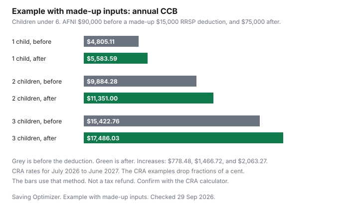

Kids · Canada
How RRSP Contributions Can Raise Your Canada Child Benefit: The AFNI Link Explained
The Canada Child Benefit is paid monthly, then recalculated every July from the previous year's tax returns. A deduction that lowers that income can raise the next benefit year. An RRSP contribution does that only if you deduct it. This page walks through the CRA's reduction rules for July 2026 to June 2027 and runs one labelled example. It is not a reason to contribute, and it is not tax advice.
Disclosure: Robo-advisor and brokerage account offers are offer types. Saving Optimizer may earn a commission if a partner link is added later. No partnership is claimed. An account offer does not change the CCB calculation. Education only. This is not tax advice. Confirm the payment with the CRA.
Key takeaways
- For July 2026 to June 2027, the maximum is $8,157 a year ($679.75 a month) per child under 6, and $6,883 a year ($573.58 a month) per child aged 6 to 17, when adjusted family net income is under $38,237.
- Above $38,237 the reduction percentage depends on the number of eligible children. A second tier starts on income over $82,847.
- AFNI starts from line 23600 for you and your spouse or common-law partner. An RRSP deduction, line 21400 child care expenses, and a claimed FHSA deduction all sit inside that net income.
- A deduction on the return for year X changes payments from July of year X+1. The 2025 return drives July 2026 to June 2027.
- Example with made-up inputs: two children under 6, AFNI $90,000, and a $15,000 RRSP deduction. Annual CCB moves from $9,884.28 to $11,351.00. That is not a tax refund.
What adjusted family net income is and which deductions lower it
The CRA's how-much page, page details 23 June 2026, defines adjusted family net income as family net income minus certain benefits, plus certain repayments. Family net income is line 23600 of your return plus line 23600 of your spouse's or common-law partner's return, if that applies.
You then subtract Universal Child Care Benefit and registered disability savings plan income received, lines 11700 and 12500, for you or your spouse. You add UCCB and RDSP amounts repaid, lines 21300 and 23200. Guide T4114 uses the same base year idea: the payment period from 1 July to 30 June uses the calendar year just before it.
Anything that lowers line 23600 therefore lowers AFNI, for the person whose return it is on. The CCB looks at the pair of returns, not at one spouse in isolation. A deduction on the higher-income return and a deduction on the lower-income return both reduce the family total. Which return can claim a deduction is a separate rule. Child care expenses usually belong on the lower-income return. That limit is on the child care expense guide, not a choice you make to steer the CCB.
| Item | What it does to AFNI | CRA line to confirm |
|---|---|---|
| Net income, you and your spouse | The starting point. Add the two line 23600 amounts. | 23600, on the CCB page |
| RRSP deduction | Lowers the claimant's net income if it is deducted. A contribution you do not deduct does not change AFNI. | Confirm the deduction line on the return for the year |
| FHSA deduction | Lowers net income if you claim the deduction. The home-savings rules are on the FHSA guide. | Confirm the deduction line on the return |
| Child care expenses | Lowers the claimant's net income, usually the lower-income spouse, up to the limits in the Income Tax Act. | 21400 |
| Union dues, moving expenses, and other deductions | They lower AFNI when they are deductions in computing net income. They do not if they are credits. | Confirm each line on the return |
| UCCB and RDSP income | Subtracted after net income, so they do not raise AFNI. | 11700 and 12500 |
| UCCB and RDSP repaid | Added back, so a repayment can raise AFNI. | 21300 and 23200 |
A TFSA contribution is not one of the adjustments on the CCB page. Do not assume it changes the benefit. The RRSP versus TFSA guide is the place to compare the two accounts. An employer match is a different decision again. Take the match questions to the employer match guide before you treat the CCB as the reason for the contribution.
The two reduction tiers and why the rate depends on number of children
For July 2026 to June 2027, based on 2025 AFNI, the CRA page states two maximums. Each child under 6 is $8,157 a year, which is $679.75 a month.
Each child aged 6 to 17 is $6,883 a year, which is $573.58 a month. If AFNI is under $38,237, you get those maximums. There is no reduction. The same page says the benefit starts being reduced when AFNI is over $38,237. T4114 uses the same sentence: the amounts start being reduced when AFNI is over $38,237.
The first tier runs from income greater than $38,237 up to $82,847. The reduction is a percentage of the income over $38,237, and the percentage changes with the number of eligible children. The second tier is income greater than $82,847. There the reduction is a fixed dollar amount, which itself depends on the number of children, plus a smaller percentage of the income over $82,847. The CCB is indexed, and payments are recalculated every July. Do not reuse these rates for a later benefit year. Check the CRA page again each summer.
| Eligible children | AFNI over $38,237 up to $82,847 | AFNI over $82,847 |
|---|---|---|
| 1 | 7% of AFNI over $38,237 | $3,123 plus 3.2% of AFNI over $82,847 |
| 2 | 13.5% of AFNI over $38,237 | $6,022 plus 5.7% of AFNI over $82,847 |
| 3 | 19% of AFNI over $38,237 | $8,476 plus 8% of AFNI over $82,847 |
| 4 or more | 23% of AFNI over $38,237 | $10,260 plus 9.5% of AFNI over $82,847 |
On the CRA's own examples, a fraction of a cent on the percentage step is dropped rather than rounded up. Seven percent of $6,763 is $473.41 exactly, and that is the one-child example on the page. Thirteen and a half percent of $21,763 is $2,938.005, and the page uses $2,938.00. This guide uses that same drop-the-fraction method in the example below. If your result is a few cents off the CRA's calculator, use the calculator.
Age is per child, and the reduction rate is per family. A family with one child under 6 and one child aged 8 still uses the two-child percentages. The maximum is $8,157 plus $6,883, not two times $8,157. In the month a child turns 6, the how-much page says you are paid the under-6 rate for that month and the 6-to-17 rate starting the next month. Shared custody is a 50 percent payment to each parent, each calculated on that parent's own AFNI. The CRA page says it will not split the amount by some other percentage.
If a child is eligible for the disability tax credit, T4114 adds a child disability benefit of up to $3,480 a year ($290 a month) for July 2026 to June 2027. That amount starts being reduced when AFNI is greater than $82,847: 3.2 percent of the income over $82,847 for one child eligible for the credit, and 5.7 percent for two or more. The CRA calculates it and adds it to the CCB. The separate CDB table is the place to confirm a partial amount. This guide's example does not include it.
RRSP, FHSA and child care deductions: effect on next July's CCB
An RRSP contribution and an RRSP deduction are not the same step. You can contribute and carry the deduction to a later year.
Only the year you deduct it changes line 23600, and only that year changes AFNI. The contribution room, the withholding on your pay, and whether a spousal contribution is useful are all outside this page. The spousal RRSP guide covers the second account. The deduction still has to be claimed on someone's return before the CCB moves.
An FHSA deduction works the same way on AFNI if the return allows it: it is a deduction, so it lowers net income. The FHSA also has a qualifying-home rule and a lifetime limit that have nothing to do with children. Do not open an FHSA to chase a CCB change. If you already contribute, and you deduct it, the CCB is one of the places the deduction shows up the following July. Confirm the line on the return.
Child care expenses deducted on line 21400 also lower AFNI. They are capped per child, they usually have to be claimed by the lower-income spouse, and they require receipts. A family that is already paying for care should claim what the law allows. That claim can raise the next CCB as a side effect. It is not a second program. The rules are on the child care guide linked above.
Worked example with made-up inputs
Example with made-up inputs. A family has two children, both under 6 for the whole benefit year.
Adjusted family net income before any extra RRSP deduction is $90,000. They deduct a made-up $15,000 RRSP contribution on the 2025 return, so AFNI becomes $75,000. These incomes are not a median, a survey, or a recommendation. The only real figures in the arithmetic are the CRA rates for July 2026 to June 2027.
Before the deduction, AFNI is over $82,847, so the two-child second tier applies. Income over $82,847 is $90,000 minus $82,847, which is $7,153. Five point seven percent of $7,153 is $407.721. Dropping the fraction of a cent leaves $407.72. Add the fixed $6,022. The reduction is $6,429.72. The maximum is $8,157 times 2, which is $16,314. The annual CCB is $16,314 minus $6,429.72, which is $9,884.28. Divided by 12, that is $823.69 a month.
After the deduction, AFNI of $75,000 sits in the first tier. Income over $38,237 is $75,000 minus $38,237, which is $36,763. Thirteen and a half percent of $36,763 is $4,963.005. Dropping the fraction of a cent leaves $4,963.00. The annual CCB is $16,314 minus $4,963.00, which is $11,351.00. Divided by 12, that is $945.9166…, or $945.92 a month if you round the monthly figure to the cent. The benefit-year increase is $11,351.00 minus $9,884.28, which is $1,466.72. That increase is not income tax saved. This page does not compute tax.
| Step | Before the deduction | After the deduction |
|---|---|---|
| Made-up AFNI | $90,000 | $75,000 |
| Tier | Over $82,847 | Over $38,237 and up to $82,847 |
| Reduction | $6,022 + $407.72 = $6,429.72 | 13.5% of $36,763 = $4,963.00 |
| Maximum, two children under 6 | $16,314 | $16,314 |
| Annual CCB | $9,884.28 | $11,351.00 |
| Monthly, annual divided by 12 | $823.69 | $945.92 |

The chart is the same made-up incomes with one child and with three children, so you can see why the rate table matters. One child uses 7 percent, then $3,123 plus 3.2 percent. Three children use 19 percent, then $8,476 plus 8 percent. The dollar increase is $778.48 with one child, $1,466.72 with two, and $2,063.27 with three. A family with a child aged 6 to 17 would start from $6,883 instead of $8,157 for that child. Do not paste the under-6 bars onto a teenager.
Timing: contribution deadline versus benefit year
T4114 draws the link in one chart. The 2025 return is the base year for payments from July 2026 to June 2027.
The 2024 return was the base year for July 2025 to June 2026. Its example is a parent whose July 2026 payment dropped because 2025 AFNI was higher than 2024 AFNI, with no change in the number of children. The other direction works the same way. A deduction that lowers 2025 AFNI can raise the July 2026 payment relative to what it would have been.
Say it as a rule you can reuse. A contribution deducted for tax year X changes the benefit year that starts in July of X+1. It does not change the payment you are receiving this month, unless the CRA reassesses an earlier year. T4114 says the CRA will recalculate after a reassessment that affects the benefit, after a change in marital status, and after a change in the number of children. A reassessment can also create an overpayment the CRA collects from later payments or from a tax refund.
The last day to contribute and still deduct it on a given year's return is not the CCB rule. It is the RRSP deadline on the CRA's RRSP page. This guide does not restate that date. Use the contribution timing guide for the refund-cycle question, and confirm the deadline with the CRA before you rely on the first 60 days of the next calendar year. Contributing in January does nothing for the CCB until that contribution is deducted on a return the benefit year actually uses.
Both of you file, even with little or no income. T4114 says that is a condition of continuing to get the CCB. If one return is missing, the CRA cannot see the family net income it uses. Filing is not the same as owing tax.
When it isn't worth it
If AFNI is already under $38,237, the family is on the maximum. Another deduction cannot raise the CCB.
It might still change income tax. That is a tax question, and this page does not answer it. If the deduction drops you from just above $38,237 to just below it, the CCB gain is only the reduction you erase, not a bonus on top of the maximum.
The second tier is where a dollar of deduction can be worth the higher percentage plus, once you cross $82,847, a change of tier. In the made-up example the family crosses from the second tier into the first. A family that stays inside one tier the whole way gets a simpler result: the relevant percentage times the deduction, until the maximum is reached. Do not multiply your whole income by the percentage. The percentage applies to income over the threshold, not to all of AFNI.
Three situations where the CCB effect is a poor reason to contribute, even when the arithmetic is real. You need the cash for bills, and borrowing to contribute adds a cost this page does not model. You are choosing between an RRSP and a TFSA and the CCB change is smaller than the flexibility you give up. Or you are about to buy a home and the FHSA or the Home Buyers' Plan is the decision that matters. Those choices live on the personal-finance guides linked above. An employer match is usually taken because of the match, not because of July's benefit.
Use the CRA's child and family benefits calculator with your own notice of assessment before you move money. The calculator is linked from the how-much page. If a child qualifies for the disability tax credit, run the child disability benefit as well. Provincial and territorial child benefits that the CRA pays with the CCB can also depend on the same income. The how-much page lists those programs by province. Open the one for your province. This guide does not quote their amounts.
Sources & date stamps
- Canada Revenue Agency, Canada Child Benefit — how much you can get, page details 23 June 2026, checked 29 Sep 2026. Maximums $8,157 and $6,883 for July 2026 to June 2027. Full amount when AFNI is under $38,237. First tier over $38,237 up to $82,847. Second tier over $82,847. Rates by number of children as in the table. AFNI definition and lines 23600, 11700, 12500, 21300, and 23200. Shared custody at 50 percent. Indexed, recalculated every July. 2025 income affects payments from July 2026.
- Canada Revenue Agency, guide T4114, Canada Child Benefit, checked 29 Sep 2026. Same maximums and the same reduction rates, including 4 or more children. Base year 2025 for the July 2026 to June 2027 payment period. Both spouses file. Child disability benefit up to $3,480 ($290 a month), reduced above $82,847 at 3.2 percent for one eligible child and 5.7 percent for two or more.
- Canada Revenue Agency, how to claim line 21400, child care expenses, checked 29 Sep 2026. Line 21400 is the child care deduction line. The per-child limits and who claims are on the child care guide.
- The $90,000, $75,000, and $15,000 figures are an example with made-up inputs. The CRA rates are the only official numbers applied to them.
Frequently asked questions
How do RRSP contributions affect the Canada Child Benefit?
An RRSP contribution changes the Canada Child Benefit only when you deduct it, because the deduction lowers net income on line 23600 and adjusted family net income is built from that line. For July 2026 to June 2027 the CRA uses 2025 income, so a lower 2025 AFNI can mean a smaller reduction and a higher CCB if you were above $38,237. This page does not tell you to contribute. Confirm the payment with the CRA.
What is adjusted family net income?
Adjusted family net income is line 23600 of your return plus line 23600 of your spouse's or common-law partner's return, if you have one. Subtract Universal Child Care Benefit and RDSP income on lines 11700 and 12500, then add UCCB and RDSP amounts repaid on lines 21300 and 23200. That is the definition on the CRA's CCB page. You both generally have to file a return for the benefit to continue.
Which deductions lower my CCB income?
Deductions that lower line 23600 lower the income the CCB uses, including an RRSP deduction, child care expenses on line 21400, and an FHSA deduction if you claim one. Union dues and moving expenses can too, when they are deductions on the return, so confirm each line for the year you are filing. A TFSA contribution is not an adjustment listed on the CCB page.
When will a contribution change my CCB?
A contribution deducted on the return for a calendar year changes the benefit year that starts the following July. T4114 says payments from July 2026 to June 2027 use the 2025 return, and a change in 2025 income shows up starting in July 2026. The last day you can still deduct a contribution on that return is a separate CRA rule. Check the CRA's RRSP page for the deadline.
Is it always worth contributing to raise the CCB?
No. If adjusted family net income is already under $38,237, the family is at the maximum and a further deduction does not raise the CCB. The benefit change is not the same number as the tax change, and this page does not calculate tax. Read the RRSP-versus-TFSA guide before you treat the CCB as a reason to contribute.
Researched and drafted with AI assistance and fact-checked against official Canadian sources. How we create content.